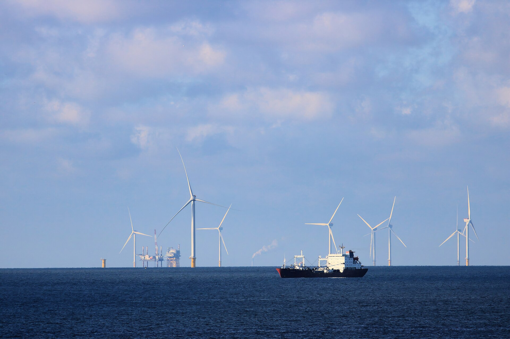

G7 выпустит 100 миллионов баррелей нефти и дизеля, чтобы сдержать цены
G7 и ЕС в течение четырёх месяцев выпустят до 100 миллионов баррелей нефти и дизеля из резервов — дизель в первые 20 дней — чтобы снизить цены на топливо, взлетевшие из-за войн против Ирана и в Украине.

Страны «Большой семёрки» (G7) и Европейский союз договорились выпустить до 100 миллионов баррелей нефти и дизеля из стратегических резервов, чтобы сдержать стремительный рост мировых цен на топливо. Решение было объявлено около 2-3 октября 2026 года после видеоконференции под председательством президента Франции Эммануэля Макрона, страна которого сейчас председательствует в G7.
Суть решения
Выпуск координируется через Международное энергетическое агентство (МЭА), начинается немедленно и продлится четыре месяца, причём первые 20 дней — преимущественно дизель. Лидеры также пообещали не вводить ограничения на экспорт энергоносителей. Рост цен вызван войной США и Израиля против Ирана и войной России в Украине.
Цифры
В США дизель в пятницу стоил 6,37 доллара за галлон (AAA), после рекордных 6,52 доллара 22 сентября. После объявления нефть марки Brent ненадолго упала ниже 100 долларов, затем восстановилась примерно до 102 долларов. Запасы дизеля в США на 11 сентября упали до 107,9 миллиона баррелей — рекордно низкого уровня.
Снизятся ли цены
Аналитики ожидают лишь кратковременного облегчения. Аналитик Capital Economics Хамад Хуссейн заявил: «Это окажет некоторое понижательное давление на цены, особенно на мировые цены на дизель. Но эффект будет кратковременным, поскольку это лишь временное решение проблемы дефицита поставок». Бывший представитель МЭА Нил Аткинсон сказал, что мера «не решает фундаментальную проблему: мировое предложение остаётся ниже нормы».